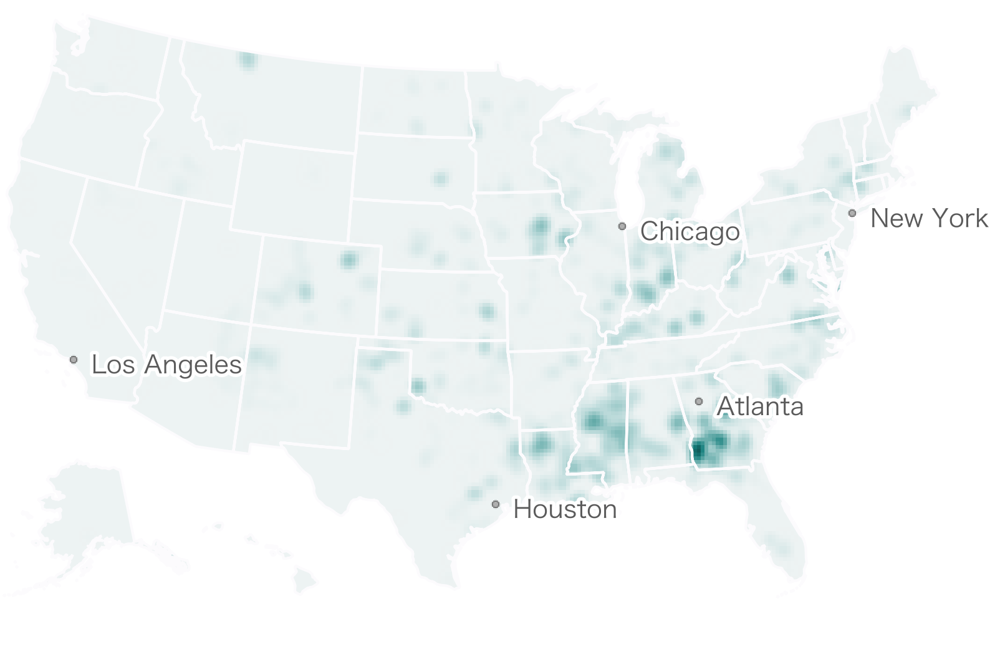

<% if (COPY.labels.headline) { %>
<h1><%= t.smarty(COPY.labels.headline) %></h1>
<% } %>

<% if (COPY.labels.subhed) { %>
<h2><%= t.smarty(COPY.labels.subhed) %></h2>
<% } %>
<div id="map-container" class="graphic" role="img">
    <!-- <div class="half-screen mobile-hide">
      <h4 class="mobile-hide">First 100,00 DEATHS</h4>
    </div>
    <div class="half-screen mobile-hide" style="margin-bottom: 20px;">
      <h4 class="mobile-hide">SECOND 100,00 DEATHS</h4>
    </div> -->
  <div class="map-wrapper urban">
    <h3 class="header urban" style="margin-top: 15px"><b>Large Cities</b></h3>
    <div class="key-wrap numeric-scale">
          <h3>Deaths Per 100,000</h3>
        <ul class="key"><li class="key-item"><b></b><label>0</label><label class="end-label">500+</label></li></ul>
      </div>
    <div class="map before">
      <h4 class="time-header">First 100,00 DEATHS</h4>
      
    </div>
    <div class="map after hidden">
      <h4 class="time-header">SECOND 100,00 DEATHS</h4>
      
    </div>
  </div>
  <div class="hidden-maps" id="hidden-maps">
    <div class="map-wrapper medium">
      <h3 class="header small-city"><b>Medium Cities</b></h3>
      <div class="key-wrap numeric-scale medium">
            <h3>Deaths Per 100,000</h3>
          <ul class="key"><li class="key-item"><b></b><label>0</label><label class="end-label">500+</label></li></ul>
        </div>
        <div class="map before">
          <h4 class="time-header before"><span>First 100,00 DEATHS</span></h4>
          
        </div>
        <div class="map after hidden">
          <h4 class="time-header"><span >SECOND 100,00 DEATHS</span></h4>
          
        </div>
    </div>
    <div class="map-wrapper rural">
      <h3 class="header rural"><b>Small/Rural Towns</b></h3>
      <div class="key-wrap numeric-scale medium">
            <h3>Deaths Per 100,000</h3>
          <ul class="key"><li class="key-item"><b></b><label>0</label><label class="end-label">500+</label></li></ul>
        </div>
        <div class="map before">
          <h4 class="time-header "><span>First 100,00 DEATHS</span></h4>
          
        </div>
        <div class="map after hidden">
          <h4 class="time-header "><span>SECOND 100,00 DEATHS</span></h4>
          
        </div>
    </div>
  </div>
</div>
<!-- <button class="toggle-graphs" data-more="<%= COPY.labels.toggle_more %>" data-less="<%= COPY.labels.toggle_less %>"><%= COPY.labels.toggle_more %></button> -->

<% if (COPY.labels.footnote) { %>
<div class="footnotes">
  <h4></h4>
  <p><%= COPY.labels.footnote %></p>
</div>
<% } %>

<div class="footer">
    <% if (COPY.labels.source) { %><p>Source: <%= COPY.labels.source %></p><% } %>
    <% if (COPY.labels.credit) { %><p>Credit: <%= COPY.labels.credit %></p><% } %>
</div>

<script type="text/javascript">
	var COPY = <%= JSON.stringify(COPY.labels) %>;
</script>
